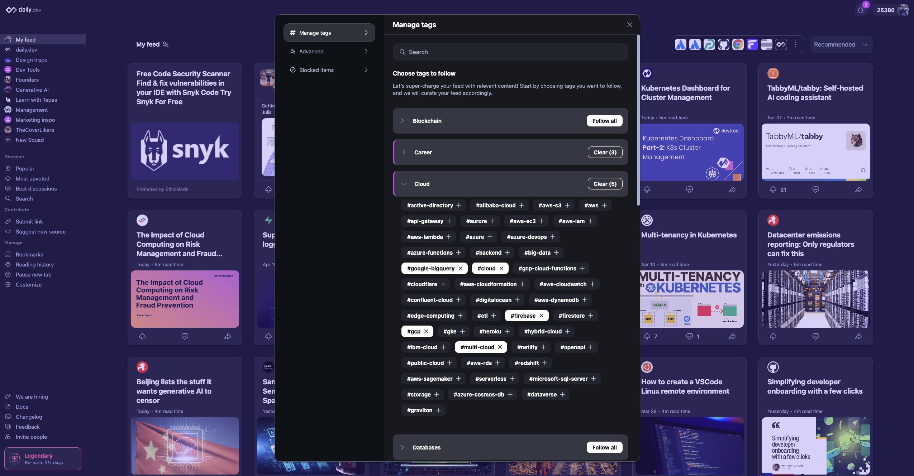

daily.dev's personal feed feature, "My Feed", allows you to customize the content you see based on your interests. This guide explains how to create your own personal feed.
Tag categories are the building blocks of your personal feed. They help you specify the topics and types of content you want to see in your feed. During the onboarding process, you'll be prompted to choose from a list of tag categories that might be relevant to your interests. You can adjust your tag selections at any time after the initial setup.

Once you've selected your tag categories, it's time to sign up for an account. Simply follow the on-screen instructions to create your profile. By signing up, you'll have access to additional features such as bookmarking posts, customizing settings, and syncing your feed across multiple devices.
After signing up, you can further customize your personal feed by fine-tuning your tag categories. You can easily add or remove tags based on your changing interests or preferences. This way, you an ensure that the content you see in your feed is always relevant and up-to-date.
To access this menu, hit the "My Feed" button located above the first card on your feed.

In addition to tag categories, daily.dev offers advanced filtering settings to help you refine your personal feed even further. You can adjust settings such as content types (e.g., non-editorial content, newsletters, product launches, etc.), and more. These advanced filtering options allow you to have more control over the content that appears in your feed, ensuring it meets your specific needs.
See the next page for more info about advanced filtering.